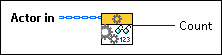

Actor:Read Autostop Nested Actor Count VI
Owning Palette: Actor Framework VIs
Requires: Base Development System
(Filename: Actor Framework.lvlib:Actor.lvclass:Read Autostop Nested Actor Count.vi)
Returns the number of auto-stop nested actors that were launched by an actor but have not yet sent back their Last Ack messages. Use this VI to detect whether all nested actors have finished working.
 | Note Nested actors launched with Auto-stop? set to FALSE will not be included in this count; actors are responsible for counting those actors themselves. |
